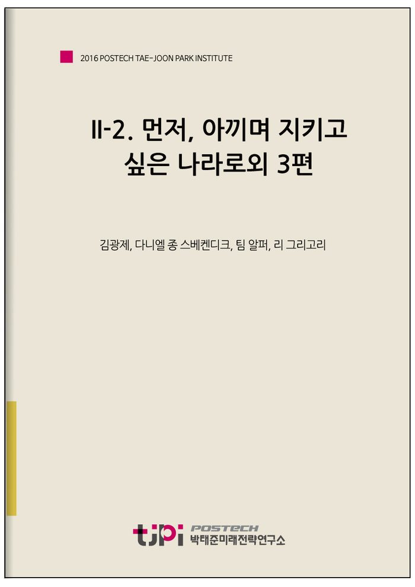

저자 김광제, 다니엘 종 스베켄디크, 팀 알퍼, 리 그리고리보도일 2016.09.30

요 약
[먼저, 아끼며 지키고 싶은 나라로]
우리가 항상 잊지 말아야 할 중요한 포인트가 있다. 개개인의 노력은 우리사회를 아낄 만한 자랑스러운 나라로 만든다는 대전제 아래에서의 노력이므로 자기 행동이 다른 사람의 활동에 방해가 되어서는 안 되며 서로 보완하는 행동이 되어야 한다는 것이다.
[한국과 독일의 사회복지 실상에 비춰볼 때]
한국의 중요한 문제 가운데 하나는 네 가지 기둥으로 이루어진 보험 제도를 독일로부터 좋은 의도를 가지고 단순히 수입했지만 많은 법률적 그리고 문화적 방식에서 독일과 다르기 때문에 그 제도가 비효율적인 점이라고 나는 생각한다.
[진정한 다문화 한국을 위해]
한국인들은 자발적으로 집단적 심리 상태에 있다. 스스로를 통합된 집단적 자아로 간주한다. 그 결과 비한국인들은 헤겔이 말한 일종의 “타자”와 유사한 것으로 나타난다. 순한국인과 이주자는 모두 번영하고 세계화된 나라에서 살고 싶어 한다. 그래서 다문화의 조화로운 세상을 만드는 것은 모든 이에게 최선의 이익이다.
[부러운 나라의 몇 가지 난제들]
위정자들이나 보수세력의 의견에 반대하면 ‘종북 좌파’로 몰아가려 하고 그들의 의견에 찬성하면 ‘수구 꼴통’으로 몰아가려 하는 전근대적인 흑백논리는 이 사회를 후퇴시키고 발전을 정체시키는 가장 큰 요인일 것입니다. 민주주의는 다양성을 인정하는 데서 시작할 것입니다.
-------------------------------------------------------
포스텍 박태준미래전략연구소는 2016년 실사구시적인 미래전략연구 주제의 하나로서 ‘더 행복한 한국사회로 나아가기 위해 가장 중요한 과제가 무엇인가’를 선정하였으며, 토박이 한국인이 아닌 분들의 목소리를 경청해보는 것이 더 객관적이고 효과적일 수 있다는 판단을 내렸습니다. 한국에 대해 잘 알고 있는 필자들은 ‘한국사회의 행복문제’를 어떤 시각으로 읽어내고, 이에 대해 어떤 대안을 갖고 있을까요?
<21개국 36인이 참여한 에세이를 엮어 '대한민국 행복지도' 미래전략연구총서(4)으로 발간되었습니다.
미래전략연구총서4 '대한민국 행복지도'
도서보기
목 차
먼저, 아끼며 지키고 싶은 나라로
- 김광제(미국)
한국과 독일의 사회복지 실상에 비춰볼 때
- 다니엘 종 스베켄디크(독일)
진정한 다문화 한국을 위해
- 팀 알퍼(영국)
부러운 나라의 몇 가지 난제들
- 리 그리고리(우즈베키스탄)
내 용
[2016 전문가 에세이] II-2. 먼저, 아끼며 지키고 싶은 나라로외 3편
김광제, 다니엘 종 스베켄디크, 팀 알퍼, 리 그리고리
먼저, 아끼며 지키고 싶은 나라로
김광제(미국)
미국 생활을 어언간 50년이나 헤아리게 되는 나로서는 우리 대한민국이 어떻게 하면 좀 더 행복한 사회로 갈 수 있는가에 대해 구체적인 의견을 내세우기가 어렵고도 외람되다고 여겨진다. 그러나 이것이 내게는 매우 중요한 문제이고 또한 관심이 많은 문제이다.좀 더 행복한 사회로 가기 위한 과제를 찾으려 한다면, 그보다 먼저 어떤 사회가 행복한 사회인가를 생각해야 할 것이다. 행복의 개념은 개인의 성향에 따라 달라진다. 어떤 사람은 물질적인 풍족을, 또 어떤 사람은 반대로 정신적인 풍족을 행복이라 할 것이다. 사상과 행동의 자유가 우선이라는 사람이 있는가 하면, 능력과 노력에 대해 충분히 보상 받을 수 있는제도가 우선이라는 사람이 있을 것이다. 재산이 고르게 분배되는 제도가 제일 중요하다고 주장하는 사람도 있다. 더 정밀하게 생각해서 여러 가지 행복의 요소에 대해, 예를 들어, 정신적인 풍족 40%, 물질적 풍족 30%, 자유 20% 등 그 비례를 정하는 사람도 있을 수 있다.그런데 어떤 사회가 행복한 사회라고 그 구성원들 사이에 의견이 모아질 수 있다면, 그리고 그 행복사회를 실현할 수 있다면, 그런 사회는 우리 모두가 아낄 만한, 그래서 우리 모두가 기꺼이 싸워서 지킬 값어치가 있는 귀중한 사회임에 틀림없다고 생각한다. 여기서 하나의 주장이 성립하게 된다.
어떤 이념과 제도가 대한민국을 행복사회로 만들 수 있는가에 대하여 자세하게 단언하지는 못하더라도, 대한민국이 좀 더 행복한 사회로 가기 위해 제일 중요한 과제는 대한민국을 국민 개개인이 아끼며 기꺼이 지키고 싶어 하는 자랑스러운 나라로 만드는 것이라고, 나는 자신 있게 말할 수 있다.요즘도 내가 가끔 되새기는 일화를 소개하고 싶다.지금부터 약 50년 전(1969년), 미국 국회의 원자력위원회에서 청문회를 열었다. 안건은 시카고 근교에 페르미연구소라 부르게 되는 새로운 국립연구소를 설립하고, 그 핵심장비로 2억5천만 달러라는 그때로서는 엄청난 예산을 들여 둘레 5마일의 거대한 가속기를 건설하겠다는 것이 과연 정당화될 수 있는가를 짚어보자는 것.미국 국회 예산인준위원회로부터 이 프로젝트의 타당성에 관한 추천을 위탁받고 있었던 원자력위원회 부위원장인 파스토레 씨는 초조할 수밖에 없었다. 오전에 나왔던 첫 번째 증인의 대답이 탐탁하지 않았던 것이다. 오후에 두 번째 증인으로 로버트 윌슨 박사가 출석하였다. 윌슨 박사는 페르미연구소의 초대 소장으로 내정돼 있었다.파스토레 씨와 윌슨 박사의 문답이 이어졌다.
“이 가속기를 사용해서 얻는 순수학문의 지식이 미국사회의 실생활에 도움을 줄 수 있다고 생각합니까?”“아니요, 그렇게 생각하지 않습니다.”“그 지식의 파생 효과로써 가령 소련과의 군사경쟁에 앞서나가게 되어 미국의 안보를 더 공고히 할 수 있다든지, 그런 희망이 있습니까?”“아니요, 그런 희망은 없습니다.”“절대로 없습니까?”“절대로 없습니다.”
갑자기 분위기가 어두워졌다. 파스토레 씨를 포함한 원자력위원회 위원들과 방청석에서 청문회의 경과를 주시하고 있는 미국 과학계 지도자들의 표정에는 당황과 실망의 기색이 역력했다. 베트남전쟁이 한창 치열한 당시에는 막대한 군비지출로 인해 정부의 여러 기관들이 예산 긴축의 불편을 감수해야 하는 상황이었다.
그래서 그 청문회를 만족시키지 못한다면 가속기 건설은 중단될 것이고, 강력한 입자가속기가 필요불가결한 기초물리학 연구분야에서 미국은 큰 타격을 받을 것이며, 결국 유럽과의 경쟁에서도 뒤처지게 될 것이었다.침울한 가운데 윌슨 박사가 다시 입을 열었다.
“이 프로젝트가 국민의 실생활이나 국가의 안보에 직접적인 기여를 하지는 않을 것입니다. 그러나 이 가속기와 그로 인한 과학의 발전은 미국을 지킬 만한 보람이 있는 나라, 아끼고 사랑하며 자랑스러워할 수 있는 나라, 그래서 너도나도 기꺼이 싸워서 지키자고 하는 나라가 되는 데에 기여할 수 있을 것입니다.”
모두가 숨소리마저 죽였다. 우레 같은 기립박수라도 치고 싶은 감동이 이심전심 전율을 일으킨 순간이었다.미국이 ‘지킬 만한 가치가 있는 나라’라고 국민 모두가 절실하게 생각한다면 그 힘은 대량 살상무기를 훨씬 능가하는 국가 방위력이 될 것임에 틀림이 없다. 저마다 국가를 아끼고 자기가 나서서 지켜야 한다는 마음을 가진 국민들로 가득한 국가는 행복한 국가이고 또한 누구도 함부로 다룰 수 없는 강력한 국가임에 틀림없다.그 예산은 통과되었다. 윌슨 박사의 지휘 아래 예정대로 완공된 가속기는 그 후 계속 개선되어 드디어 테바트론(TEVATRON)이라는 세계에서 처음으로 초전도 기술을 활용하는, 세계 최고 가속기로 발전되었고, 거기서 가속된 맹렬한 입자충돌에서 발생하는 현상을 관측함으로써 20세기 소립자 물리학을 정립하는 데 결정적으로 기여하였다.대한민국은 그동안 숱한 우여곡절이 있기는 하였으나 이제는 세계 속에서 여러 모로 자랑스러운 나라가 되었다. 요즈음 조국을 방문할 때마다 나는 한국인으로서 자부심을 느낀다. 쾌적한 공중교통 시설, 고속도로 연변의 아름다운 경관, 나무들이 울창한 산, 가을을 타는 황금빛 들판과 그 사이로 흐르는 시내, 이것들이 다 자랑스럽다. 전자산업을 위시해 국제적 명망이 높은 한국 기업들의 놀라운 업적, 혜성처럼 나타나 세계를 매료시킨 빙상의 처녀, 세계 골프계를 주름잡는 한국 여성들, 유서 깊은 국제 음악경연대회를 석권한 젊은 예술가들……. 이들 모두가 고맙고 자랑스럽다. 아끼고 싶고 지키고 싶다.
내가 종사하고 있는 가속기 분야에서도 큼직하고 자랑스러운 조국의 소식들이 들려온다. 첨단 과학과 공학을 요구하는 동시에 하나의 대규모 공사이기도 한 X-선 자유전자레이저 가속기 건설이 성공했다는 소식을 몇 달 전에 들었다. 미국과 일본을 불과 몇 년 간격으로 좇아 이룩한 쾌거이다. 어찌 자랑스럽지 않겠는가! 그것은 대한민국 과학 장래의 또 하나의 초석이다. 우리만의 경사도 아니다. 선의의 경쟁으로 창의력을 유지해나가고 있는 세계 과학계의 경사이다.그러나 자만에 빠져서는 안 된다. 왜냐하면 자랑스러운 사회가 그 자랑스러운 점을 유지하기 위해서는 마땅히 거기에 따르는 의무와 노력을 소홀히 하지 말아야 하기 때문이다. 이 문제에는 국민 구성원과 지도자들의 의식적인 노력이 반드시 요구된다. 자랑스러운 사회가 스스로 자랑스러운 사회라는 것을 잊어버릴 때, 그 사회 또는 그 국가는 성장의 정도를 벗어날 수밖에 없다. 그런 경우는 세계의 역사에 드물지 않다. 아니, 비일비재하다.내가 알고 있고 깊이 느끼는 한 예가 있다. 페르미연구소의 테바트론 성공에 힘입은 미국 과학계가 초전도-초대형 충돌 가속기 사업을 미국 텍사스 주에서 시작하였다. 둘레 54마일, 테바트론의 10배 이상 프로젝트였다. 그러나 몇 년이 지난 1993년 10월, 그 사업은 비용이 너무 크다는 이유로 미국 국회의 건의와 대통령의 행정명령에 의해 중단되고 말았다.참으로 애석한 일이었다. 그 프로젝트가 계속되었다면 유럽연합의 쎄른연구소(CERN)에서 수년 전 발견한 이른바 ‘신(神)의 입자(HIGGS)’를 훨씬 먼저 발견할 수 있었을 것이다. 그랬다면 미국의 과학 입지는 세계정상을 계속 유지해왔을 것이다. 그 건설 비용을 미국이 감당할 수 없다는 것이 이유였지만, 미국의 경제 규모로 보아 설득력이 약한 것이었다. 그보다도 미국이 혁신적인 과학 투자에 관한 의지를 잃었기 때문이었다고, 나는 생각한다. 제2차 세계대전 이래로 과학의 거의 모든 분야에서 세계를 주도해온 미국 과학계가 1993년 10월 이후 창의력과 선도력을 유럽에 내주고 말았다는 느낌도 받는다.미국이 세계의 리더로서 위치를 잊어버리지나 않았을까 하는 나의 염려는, 2016년 대통령선거 후보로 나선 사람이 매우 배타적이고 선동적인 언행으로 선거운동을 하고 있고 또 그의 연설에 열광하는 일부 국민들의반응을 지켜보면서 다시 고개를 들고 있다.우리가 항상 잊지 말아야 할 중요한 포인트가 있다. 개개인의 노력은 우리사회를 아낄 만한 자랑스러운 나라로 만든다는 대전제 아래에서의 노력이므로 자기 행동이 다른 사람의 활동에 방해가 되어서는 안 되며 서로 보완하는 행동이 되어야 한다는 것이다.
그러한 사회는 사회 구성원들끼리 서로 배려와 격려를 잊지 않을 것이며, 자신이 속한 사회를 아낄 가치가 있는 집단으로 생각하기 때문에 사회발전의 정책들도 목전의 이익을 넘어 장래의 번영에 초점을 맞추는 안목과 양식을 가질 것이다.대한민국이 행복한 사회로 가기 위해 제일 중요한 과제는, 대한민국의 국민이 대한민국을 자랑스러운 나라로 만들었다는 긍지를 국민 개개인이 확실하게 가지도록 해주는 것, 대한민국이 우리 모두가 아끼며 우리 모두가 앞장서서 지킬 만한, 지켜야 하는 그런 나라인 것을 더욱 확실하게 알도록 해주는 것이다. 바로 여기에다 반드시 국가 백년대계의 한 초점을 맞추어야 한다고, 나는 생각한다.
-------------------
한국과 독일의 사회복지 실상에 비춰볼 때
다니엘 종 스베켄디크(독일)
최근 한국에서 성인들을 대상으로 이뤄진 여론조사에 따르면 열 명 가운데 여덟 명이 한국(“헬조선”)을 떠나고 싶어 한다. 이들 가운데 많은 이들이 서유럽의 사회복지 국가들을 살고 싶은 곳으로 꼽았다. 서독에서 성장하면서 나는 풍족한 사회복지 서비스를 당연하게 생각했다. 독일에서는 대학과 학교가 무료인 반면에 한국은 OECD 국가들 가운데 사교육비가 제일 높고 대학 등록금은 두 번째로 비싸다. 공식적으로 나는 한국에서 태어나 1970년대에 서독으로 이민을 갔다. 그 후에 나는 연구를 위해서 한국으로 돌아왔고 현재 10년째 한국에서 살고 있다. 따라서 사회복지를 주제로 하는 이 에세이는 한국과 독일을 비교하는 관점에서 쓴 것이다.독일은 사회복지라는 매우 오랜 전통을 가지고 있다. 독일의 사회복지 국가(독일어로 Wohlfahrtsstaat)는 산업화의 결과물이다. 영국이 비록 18세기에 산업화를 선도하였으나 독일이 19세기 후반(화학공학, 기계, 자동차를 포함하는 전자-과학기술에 초점을 맞춘)에 제2차 산업화를 주도함으로써 영국을 따라잡았다. 산업화와 자본주의가 밀접하게 관련되어 있으므로 유럽의 정치인들과 철학자들은 이 문제에 특별한 관심을 기울였다. 제2차 산업혁명 동안에 대다수의 노동력이 농장에서 공장으로 이동하기 시작함에 따라서 독일인들은 결국 사회복지 제도를 시행했다. 이와 동시에 독일은 가난한 프롤레타리아 노동계급 사이에서 인기가 있었던 사회주의 철학자들의 중심지가 되었다. 자본주의 고용주들과 달리 이러한 철학자들에 따르면, 노동계급은 그들이 생산한 상품으로부터 적절한 이익을 취하지 못했다.
따라서 독일은 도덕적 필요성뿐만 아니라 사회불안과 좌파 극단주의자들을 진정시키기 위해서 사회복지 제도를 도입할 수밖에 없었다. 1890년대에 독일 수상 오토 본 비스마르크는, 오늘날 많은 선진국에서 사회복지의 네 가지 기둥인 연금, 건강보험, 산업재해보험, 그리고 나중에 실업보험 등을 포함하는 사회개혁을 법률로 정했다.독일이 두 번 모두 패한 양차 세계대전과 두 개의 독일(1945-1990)로 나눠진 후에 사회복지는 서독에서 계속 중요한 정치적 목표였다. 매우 흥미로운 사실은 동독이 비록 사회주의 국가였지만 자본주의 서독이 먼저 사회주의적 사고방식을 수용했다는 점이다. 1960년대에 독일 정치인들은 독일의 경제학자 알프레드 뮬러-아르막이 제2차 세계대전 후에 제안한 용어인 “사회시장경제” 정책을 받아들였다. 사회적 보상을 더 많이 강조하지만 여전히 완전한 경쟁적 자유시장경제를 약속하는 사회시장경제는 (미국과 같은) “자유시장경제”와는 많이 다른 것이다. 독일인들은 높은 요금과 세금을 내고, 이것은 가난한 사람들을 도와주는 데 사용된다. 사회복지와 사회시장경제의 역사적 전통 때문에 독일인들은 국가의 도움을 기대하므로 높은 세금과 요금에 대해서 별로 불평하지 않는다.약 10년 동안 한국에서 살면서 나는 개인적으로 독일과 한국 간에 사회복지 정치에서 두드러진 차이점들을 발견했다. 한국은 네 기둥으로 이루어진 보험제도를 가지고 있는데, 이는 보편적 건강보험이 없는 미국 같은 선진국들과 대비되는 것이다. 사회복지 제도는 이미 1970년대 후반에 한국에서 시작됐지만 그 기원은 1960년대 초반으로 거슬러 올라가 볼 수 있다.1963년 군사정권이 한국에 건강보험을 도입했고, 1965년부터 1977년까지 제한된 숫자의 사람들을 대상으로 시험 운영했다. 비록 (500명 또는 그 이상 규모의) 대기업 종사자들에게만 적용되었지만, 1978년부터 1987년까지 건강보험이 인구의 10퍼센트에서 51퍼센트까지 확대되었다. 1970년대 후반에 국민건강보험을 갑자기 시행한 이유는 한국이 공공 건강관리에 사용해야 한다는 조건으로 1975년 미국으로부터 받았던 원조 차관 때문이었다. 1988년부터 오늘날까지 국민건강보험은 농부, 자영업자, 그리고 대부분 저소득 노동자들인 도시 비정규직 노동자들을 포함한 거의 모든 국민에게로 확대되었다. 이는 1987년 대통령 선거 당시에 한 후보가 정부 보조금으로 저소득 노동자들을 건강보험 제도에 포함시키겠다고 공약을 했기 때문이었다.국민연금은 1973년에 검토되었다가 공식적으로 1988년 한국에 도입되었다. 맥락을 살펴보자면, 박정희 대통령은 국민들로부터 지지를 받지 못했던 유신헌법을 1972년에 제정했다.
박 대통령은 자신의 정치적 정당성을 합리화하기 위해서 복지 제도들을 포함시켜야 했다. 그가 연금제도를 선택한 이유는 정부가 노인들을 지원함으로써 시민들로부터 많은 정치적 저항 없이 경제개발을 위한 자본을 동원할 수 있었기 때문이었다. 따라서 연금 제도는 정부가 운영한 경제적 그리고 사회적 제도였다. 그러나 1973년 오일 쇼크로 인하여 연금 제도는 1988년까지 미뤄졌다. 1987년 당시 노태우 대통령이 정치적 이유로 연금 제도를 재시행했다. 1988년 연금 제도는 산업 노동자들을 대상으로 했으나 1997년에는 농부로, 1999년에는 자영업자와 도시 비정규직 노동자로 그 적용 대상이 점차 확대되었다. 2000년대 후반까지 가입률이 85퍼센트에 이르렀다.건강보험과 함께 산업재해보험은 한국에서 군사정권에 의해 1962년에 도입됐다. 정부는 또한 실업 관련 제도도 도입했으나 재원 조달 방법에 확신이 서지 않았으므로 돈이 적게 드는 산업재해 제도에 초점을 맞추기로 결정했다. 사실, 고용주들이 이미 1950년대부터 산업재해에 대한 책임을 져왔기 때문에 정부가 해야 할 일은 산업재해 보험을 의무화하는 것뿐이었다. 산업재해보험은 1963년에 제정되어서 (500명 또는 그 이상 규모의) 대기업 종사자들에게만 적용되었다. 1987년부터는 5인 이상 고용주들도 의무적으로 가입하게 되었다. (4인 미만의) 소기업 종사자, 자영업자, 농부, 그리고 도시 비정규직 노동자는 여전히 가입 대상에서 제외되어 있으므로 산재보험이 국민연금이나 건강보험보다 가입률이 훨씬 낮다.실업보험은 1995년에 시작되었다. 5개년 개발계획에 저임금 노동력이 필요했던 한국의 역대 정부는 역사적으로 볼 때 이 제도에 큰 관심을 갖지 않았다. 그러나 수십 년 만에 처음으로 문민 대통령이 된 김영삼은 실업보험 제도를 주창하며 스스로를 이전의 군사 정부들과 다른 복지 대통령으로 내세웠다. 게다가 반도체 산업의 성장 덕분에 한국경제가 1990년대 초반에 승승장구하고 있었다.비록 독일과 마찬가지로 한국 인구의 거의 100퍼센트가 몇몇 보험에 가입되어 있지만(예를 들어, 건강보험 가입률은 2000년대 후반에 99.7퍼센트에 달했다.) 사람들이 받을 수 있는 서비스의 종류에는 매우 큰 차이가 있다. 독일에서는 중증과 만성 질병 또는 수술을 포함한 모든 것이 기본적으로 건강보험에 적용된다. 한국에서 건강보험은 진단과 기본적인 치료에만 적용된다. 암과 같은 매우 위험한 질병에는 보험이 전혀 적용되지 않는다. 앞에서 설명했듯이 독일은 오랜 사회복지 전통을 갖고 있기에 독일인들은 모든 것이 보험에 적용되기를 기대하고 있다.독일 제도의 장점들 가운데 하나는 사람들이 수입 수준에 관계없이 치료를 받을 수 있다는 것이다. 반면에 미국에서는 의료보험이 없는 환자들은 혼자 힘으로 해결해야 한다.
프랑스에서는 환자들의 의료비가 80퍼센트만 보험 적용이 되기 때문에 나머지 20퍼센트를 지불할 형편이 되지 않는다면 문제에 처하게 된다.다른 한편에서 보자면, 한국의 의료보험이 실질적으로 위험한 질병에는 적용되지 않기 때문에 한국인들이 건강에 더 신경을 쓰게 되어 (무료) 건강진단을 받으러 간다. 이런 이유들 때문에 독일에서보다 한국에서 어린이와 노인 질병들이 훨씬 조기에 많이 발견된다고 나는 생각한다. 의료비가 어차피 무료이기 때문에 독일인들은 치료와 치유 그리고 후기 개입에 더 초점을 맞추는 반면에, 중병 의료비가 엄청나게 비싼 한국에서는 예방과 진단 그리고 조기 개입에 더 초점을 맞추고 있는 듯하다.한국인들은 사보험 상품을 추가하는데 그들 중 어떤 사람들은 건강보험이 일종의 “투자”라고 믿고 있다. 이것이 의미하는 바는 그들이 몇 십 년 후에 그 돈의 일부를 되찾기를 희망하고 있다는 점이다. 이와는 달리 독일인들은 비록 30년 넘게 보험료를 지불하고 한 번도 아프지 않았다 하더라도 돌려받을 수 있는 것이 전혀 없다는 점을 쉽게 받아들인다. 사회복지가 자신의 수입을 극대화하기 위한 돈의 투자가 아니라, 병 그리고 중증 질환과 같은 “최악의 경우”를 대비하는 것이라는 점을 한국인들이 이해할 필요가 있다고 나는 개인적으로 생각한다.실업보험 또는 연금과 같은 다른 사회복지 제도들은 개혁이 필요하다. 한국이 비스마르크의 사회복지 제도를 모방했을 때 네 기둥으로 이루어진 보험 제도는 국가가 제공하는 튼튼한 기반이 있을 때에만 작동한다는 점을 망각했다. 산업재해보험은 국가, 법원, 그리고 언론이 국민들의 편에 있을 때에만 작동한다. 이는 (학계, 주류 언론, 그리고 많은 정당들이 좌로 기우는 경향이 있는) 독일의 경우에 사실이다. 반면에 한국에서는 북한의 위협 때문에 정부가 경제성장에 우선권을 부여해왔다. 이는 정부가 민간 부문의 편에 서 있음을 의미한다.한국의 피고용인들은 매우 취약한 상황에 놓여 있어서 독일보다 고용주를 고소하기가 더 어렵다. 이와 마찬가지로, 지난 수십 년간 한국의 연금 수급 수준은 꾸준히 향상되었지만 여전히 한국인들은 노인이 되어서 충분한 연금을 받지 못하고 있다. 한국인들은 최소한의 충분한 연금을 받기 위해서 20년을 일해야 한다. 그러나 1997년 아시아 경제위기가 발생하고 나서 많은 한국인들이 직장을 잃거나 유지하지 못했다. 한국 회사들이 유교적인 이유로 제공했던 평생 고용이 경제위기 이후에 피고용인들의 경쟁력 강화를 위해서 폐지되었다. 그러나 독일에서는 일자리 보호가 매우 강해서 사실상 많은 사람들이 은퇴할 때까지 같은 회사에서 일을 한다. 비록 한국에서 임신한 여성들과 같은 어떤 집단이 법에 의해서 다소 보호를 받고 있다 하더라도 매우 쉽게 직장을 잃을 수 있다.
이는 사실상 20년 동안 계속해서 같은 직장에서 일하는 한국인들이 거의 없음을 의미한다. 많은 이들이 실직하거나 불완전한 고용 상태이기 때문에 자영업을 할 수밖에 없지만 자주 실패한다. 또한 연금 제도에도 불구하고 한국은 OECD 국가들 가운데 노인 빈곤율이 가장 높은 나라에 속한다.한국의 중요한 문제 가운데 하나는 네 가지 기둥으로 이루어진 보험 제도를 독일로부터 좋은 의도를 가지고 단순히 수입했지만 많은 법률적 그리고 문화적 방식에서 독일과 다르기 때문에 그 제도가 비효율적인 점이라고 나는 생각한다. 한국의 복지 제도는 아시아 경제위기 때까지 잘 작동했으나, IMF의 강요로 유교적인 평생 고용 보장을 없애는 바람에 피고용인들이 더 나은 경쟁력을 갖게 됐지만 동시에 외부적인 경제 충격에 매우 취약하게 되었다.결론적으로, 한국이 네 가지 기둥으로 이뤄진 사회복지 보험 제도를 가지고 있다는 점은 좋은 소식이지만 그 사회복지 제도가 매우 취약하다는 것은 나쁜 소식이다. 한국의 사회복지 제도를 독일처럼 튼튼하게 만들기 위해서는 세금과 요금을 인상해야 한다. 그러나 여기에는 두 가지 장애물이 있다.첫째, 심지어 “통일세”를 포함한 많은 세금을 내는 것에 익숙한 독일인들과 달리 한국인들은 높은 세금을 내길 원치 않는다. 둘째, 북한의 위협 때문에 한국의 상당한 국가 예산이 군대와 경제에 사용된다. 이 장애물들은, 한국이 독일처럼 완전한 사회복지 제도를 보장할 수 있는 충분한 재원이 없음을 의미한다. 남과 북이 어느 날 통일을 이루게 된다면 (미국식 “자유시장경제”와는 많이 다른) 독일식 “사회시장경제”가 한국에서 가능하겠지만, 지금으로서는 그렇지 않기 때문에, 두 가지 장애물은 좀 더 행복한 한국사회로 전진하는 길의 큰 장애물이기도 하다.
-------------------
진정한 다문화 한국을 위해
팀 알퍼(영국)
거의 11년 전 내가 한국에 처음 왔을 때는, 비한국인이 많지 않아서 약 50만 명 정도였는데 현재 그 숫자는 서너 배로 불어나 거의 200만 명의 나와 같은 비한국인이 있다.내가 처음 한국에 도착했을 때, 만날 수 있었던 대부분의 비한국인은 단기 근무 중인 미국 군인이었다. 그때 아이들은 거리에서 나를 보면 “저기 봐, 외국인이다!”하고 손가락으로 가리키곤 했는데, 시대는 빠르게 변해서 요즘 인기 K-pop 그룹들은 중국, 대만, 태국인 멤버들을 합류시키고 있으며, 한국 TV 쇼에는 가나, 호주, 이탈리아 같은 다양한 국적의 비한국인이 출연하고 있다. 요즘 아이들은 나를 봐도 눈길조차 주지 않는다.내가 한국에서 생활하는 동안, 한국정부는 한국에 사는 수많은 비한국인의 삶을 개선시키기 위해 다문화 정책을 시행해 왔다. 하지만 이 정책이 의미하듯이, 순한국인과 이민자 사이에는 여전히 깊은 분열이 존재한다.경찰이 발표한 수치는 비한국인 거주 지역의 불법 행위가 크게 증가하고 있음을 보여준다. 비한국인들의 범죄율은 일 년에 평균 5천 건씩 증가하고 있으며 폭력 범죄도 늘고 있다. 경찰은 비한국인이 가장 밀접해 있는 15개 지역에 “비한국인 범죄 예방을 위한 통합적인 노력”이라 불리는 계획을 새로 도입함으로써 여기에 대처하고 있다.
이민자들이 많이 모여 거주하는 경기도 안산과 부산 장림동 지역은 주택 가격이 낮다. 이것은 그 지역으로의 이주를 꺼리는 한국인들이 많다는 점을 반영한다. 2015년 실시된 여성 가족부의 조사에서 한국인 32%가 옆집에 이민자가 사는 것을 원치 않는다고 답했다.한편, 한국에 사는 비한국인들 사이에 만연한 불만도 다양하다. 2015년 경기도 이민자 인권 연구 정책개발 기관의 연구에서 비한국인 44%가 직장에서 차별을 느낀다고 응답했고, UN 인종차별 특사는 최근 보고서에서 한국정부가 이민자 신부들에게 “불충분한 권리”를 제공한다고 밝혔다. 2005년 전북대학교에서 실시한 조사에서는 약 50%의 비한국인 이혼녀들이 한국인 남편에게서 신체적 학대를 받았다고 주장하기도 했다.나도 한국에 살면서 비한국인과의 결혼 때문에 부모님에게 의절 당한 한국인들을 보기도 하고 많은 비한국인들이 한국에서 사는 것에 대해 심하게 불평하는 것을 듣기도 했다. 한국에서 인종간 화합은 아직 갈 길이 멀지만, 바로 잡을 수 있는 시간은 얼마든지 있고, 그 기회는 한국인의 완고한 태도의 변화에 달려 있다.정부에서는 더 이상 강요하지 않지만, 한국의 전통적 민족주의의 유산은 여전히 한국인을 괴롭히고 있다. 단일 민족주의로 알려진 이 이념은 20세기 초반의 일제 식민지 시대에는 저항운동으로 사용됐는데, 일본 제국주의는 일본과 한국이 민족적으로는 유사하나 한국인을 열등한 계급으로 간주한 반면, 단일 민족주의 신봉자들은 한국인들의 고유한 민족성을 주장했다. 그들은 인종적 순도의 유지가 한국인들에게 일체감을 부여할뿐만 아니라 식민지 지배의 고리를 벗어날 힘이 되리라고 생각했던 것이다.제2차 세계대전이 끝나고 일본이 물러간 후에도 한국의 단일 민족주의는 1961년부터 1979년까지 통치했던 박정희 대통령이 강력히 유지한 인종적 순도 관련 정책과 더불어 계속 번창했다.요즘도 한국에서 민족의 단일성을 과시하는 것을 듣는 것은 흔히 있는 일이지만, 2007년에 와서 이러한 태도는 국제적인 비난을 초래하게 되었다. 특히 UN은, “한국의 민족적 동질성에 대한 강조는 이해와 관용, 우정의 증진에 있어 장애가 될 수 있음을 우려한다”라고 표명했다. 단일 민족주의 정서는 주로 노년층의 한국인들에게 문제시되는 것이지만, 젊은 한국인들에게는 진정한 다문화 국가의 건설을 추구하는 데 있어 극복해야 할 또 다른 장애물이다.
한국에는 일상적인 인종차별이 만연해 있는 편이다. 중국 음식 이야기를 할 때, 젊은 한국인들은 자주 중국인을 비하하는 용어인 “짱깨”라고 표현한다. 일본과의 스포츠 경기에서 한국의 젊은 스포츠팬들은 원숭이 소리를 내며 동쪽의 이웃을 향해 인종차별적 비방을 한다.많은 한국 청년들이 그러한 인종차별적 인식을 악의 없는 장난 정도로 일축하지만, 실제로 인종차별적 농담은 스테레오 타입의 전파를 더욱 부추길 뿐이다. 게다가 10대들까지도 인종적 열등함을 표방하는 용어인 “짱깨”, “원숭이”를 계속 쓰는 모습을 보면 한국사회에서 인종적으로 화합하는 미래가 곧 오리라고 예상하기는 힘들 것 같다.한국의 텔레비전 매체도 심각한 인종차별주의를 드러내곤 한다. 한국의 흑인공동체와 국제 언론의 반복되는 항의에도 불구하고, 한국의 코미디 쇼는 여전히 요즘 시대에는 문화적 무례가 되는, 검은 얼굴로 분장한 캐릭터가 등장하는 토막극을 정규 방송에 내보내고 있다. 이것은 미국 같은 나라에서 인종차별이 이뤄지던 시절로 회귀하는 모습이다.2015년에는 한국의 한 케이블 TV 채널에서 방송된 프로그램 하나가 태국에서 격분을 불러 일으킨 적이 있었다. 방송 중에 한국 코미디언들이 태국 승려 흉내를 내며 불상에 물리적 폭행을 가하고 머리 주위를 주먹과 손바닥으로 때리는 장면을 보여줬던 것인데, 동남아시아에서 불상의 머리는 신성하다고 여겨지기 때문에 건드리기만 하는 것도 금기시 된다.그때 태국은 한국 대사관에 청원서를 보냈다. 그 방송이 외교적 분쟁의 위험을 촉발시킨 것이다. 프로그램 제작자는 신속히 사과 방송을 내보냈다. 이로써 문제는 마무리되는 것처럼 보였다. 그러나 방송국의 사과가 이뤄진 뒤에 그 방송이 서울 메트로의 공공 화면에 수 개월 간 재방송되면서 서울에 사는 태국 거주민들과 여행객들에게 큰 불쾌감을 일으켰다.그러나 인종간의 불화를 순전히 한국인의 책임이라고 비난하는 것은 동전의 한 면만을 보는 것이다. 속담에서 말하듯이, 손바닥도 마주쳐야 소리가 나는 법이다. 한국에 사는 많은 비한국인들의 행동에도 아쉬운 점들이 적지 않다고 할 수 있다.대다수의 비한국인들은 이 나라의 현지 사정에 대해 한심할 만큼 준비가 되어 있지 않다. 부족한 언어 능력, 부족한 역사 지식, 경제 전망에 대한 왜곡된 지식을 지니고 이 나라에 도착한다는 것은 슬픈 현실이다.
비교적 소수의 이민자들만이 시간을 내서 한국어를 배운다. 다수의 장기 체류자들도 대체로 한국어를 제대로 배우려 하지 않는다. 철학자 루드비히 비트겐슈타인은, “내 언어의 한계가 곧 내 세계의 한계다”라고 말했다. 한국의 이민자들에게 딱 어울리는 말이다.많은 한국인들이 겸손하게도 영어로 비한국인들에게 말해 보려 애쓰지만, 여기에서는 별개의 이야기다. 해외여행에서 현지의 모국어를 구사할 수 없는 무능 ―아무리 그 언어가 어렵다 해도―의 책임은 항상 여행자의몫이다. 만일 비한국인이 한국사회에 동화되기를 원한다면, 현지인들과 그들의 언어로 이야기하려는 자발성을 보여야만 한다. 한국어를 배우는 것은 동화하기 위한 노력에 있어 필수적이다.한국인이 왜 주변국 사람들을 경계하는지에 대한 이해가 없는 비한국인 체류자들이 자주 한국인의 인종차별주의 인식에 불만을 드러내는 것도 적절치 못하다.16세기 무렵, 한국은 이웃한 국가들로부터 끊임없이 이어지는 공격을 받았다. 19세기에는 외세를 피하기 위해 실질적인 쇄국정책을 펼쳤다. 20세기 초까지도 서방 언론 매체들은 한국을 여전히 “은자의 왕국”이라 칭하고 있을 정도였다. 이 정책은 1876년 공식적으로 폐지될 때까지 계속됐다. 그로부터 이십 년 후에 일본 제국주의의 침략으로 왕족이 살해당한데 이어 식민지 지배를 받게 되었다. 현재는 거의 3만 명의 미군 부대가 주둔하고 있고, 북한과 휴전선을 사이에 두고 대치한 상태에서 자주 냉담한 태도를 취하는 중국과 밀접한 관계를 맺고 있다. 아직도 한국인들은 다른 나라들과의 관계에서 자신들의 위치가 위험에 처해 있다고 느낀다.여러 면에서 한국은 세계로부터 포위 공격을 받고 있다고 느낀다. 수 세기에 걸쳐 외국의 적대적인 침략에 대항하여 분투해온 한국인이 비한국인에 대해 “저 사람은 나를 공격하지 않고 친구가 될 거야”라고 생각하기는 힘든 일이다.한국이란 나라가 어떻게 발전했는가에 대한 아무런 지식도 없이 한국에 오는 것은 그 비한국인에게 확실한 낭패가 될 뿐이다. 한국인을 비난하기에 앞서, 역사적인 맥락에서 이해하려고 노력하는 것이 훨씬 더 도움이 될 수 있다. 한국 역사에 적극적인 관심을 갖고 어떻게 현대 한국이 만들어졌는지에 관한 다큐멘터리를 읽거나 보는 것은 새롭게 눈을 뜨는 기회가 될 것이다. 이러한 노력도 없이 왜 한국인이 그렇게 행동하는지를정확히 이해하기란 어려울 수밖에 없다.
한국으로 이주하고자 하는 사람들 중에는 자국의 가난에서 벗어나려는 목적으로 국제 브로커를 거치는 경우도 적지 않다. 한국 드라마에서 자주 한국인들은 비싼 차와 집, 번쩍번쩍하는 최신 설비로 둘러싸인 ‘울트라 리치 피플’이라는 인상을 준다. 하지만 슬프게도 그것은 평범한 삶이 아니다. 현재 아시아 전역에서 인기를 모으는 그런 드라마들은 판타지다. 대다수의 보통 한국인들은 그런 식으로 살지 않는다.한국 정부는 여기에 문제가 있음을 인식하고, 현재 이주자 결혼의 경우에는 배우자에게 한국어 능력 시험을 치를 것을 요구하고 있다. 의사소통은 모든 가정문제의 열쇠이다. 언어 자격요건에 의해 앞으로 한국의 다수 민족과 소수 민족 간에 언어 단절이 확실히 없어지기를 희망한다.배우자가 될 사람들은 한국 비자 허가를 받기 전에 재정 독립성 정도를 증명할 필요도 생겼다. 이것은 비현실적인 재정적 망상에 근거한 결혼을 시초부터 봉쇄하는 공식적 인증인 셈이다. 한국정부가 요구하는 필수 자격 요건은 아직 완성까지는 갈 길이 멀지만 최소한 바른 결정을 향한 한 걸음이라고 할 수 있겠다.한국인들은 자발적으로 집단적 심리 상태에 있다. 스스로를 통합된 집단적 자아로 간주한다. 그 결과 비한국인들은 헤겔이 말한 일종의 “타자”와 유사한 것으로 나타난다. 그런 한편에서 비한국인들은 서양인 에드워드 사이드가 『오리엔탈리즘』에서 기술한 것처럼 한국인을 교육하고 개조시키기를 열망하며 변화할 필요가 없는 것을 변화시키려 하는 것에 다다를 수 있다.순한국인과 이주자는 모두 번영하고 세계화된 나라에서 살고 싶어 한다. 그래서 다문화의 조화로운 세상을 만드는 것은 모든 이에게 최선의 이익이다. 순한국인과 이민자 공동체가 힘을 합쳐 몇 개의 정신적 장벽이라도 무너뜨린다면, 경제적으로 문화적으로 번영이 지속되는 나라의 일상 현실에서 화합을 실현하며 즐기지 못할 이유가 없다.
-------------------
부러운 나라의 몇 가지 난제들
리 그리고리(우즈베키스탄)
사람은 이 세상에 태어난 순간부터 영원히 눈을 감는 순간까지 ‘행복한 삶’을 원합니다. 그러한 인간의 욕망은 국적과 인종을 불문하고 누구나 동일하다고 봅니다. 그러나 사람은 사회적인 존재라서 개인의 행복도 사회의 조건에 좌우된다고 봅니다.한국은 내가 상상했던 것보다 더 빠른 속도로 경제적인 발전을 이뤄냈고 초고속으로 현대화되어 가고 있다고 생각합니다. 하루가 다르게 변화해가는 디지털 문화가 그렇고 시민들의 문화향유 능력도 놀랍습니다. 서구 어느 나라보다 잘 되어 있는 디지털의 생활화는 상상을 초월합니다. 완벽하리만치 잘 되어있는 인터넷, 누구나 소유하고 있는 고성능의 스마트폰, 거리를 질주하는 국내산 자동차, 국가가 실시하는 건강검진제도와 누구나 혜택이 가능한 의료시스템, 언제 어디서나 혜택이 가능한 의료보험제도, 체계화된 대중교통, 공원의 체육 기구들, 문화와 역사와 예술을 알리는 공연장, 현대화된 도서관과 대형 서점들, 잘 정비된 공공 화장실… 시민들을 위한 이 모든 것들이 나를 감탄하게 만듭니다. 동구나 서구의 어디에 이만한 생활의 편리와 디지털의 혜택을 피부로 누릴 수 있는 곳이 있을까요. 나는 내가 지금 살고 있는 우즈베키스탄의 낙후된 제도나 대중시설물들을 생각할 때마다 마음이 착잡해지기도 합니다.대한민국은 참담한 민족 전쟁 6·25를 겪고 그 참담했던 현실을 짧은 기간에 몰라보게 부흥시킨 자랑스러운 나라입니다.
전쟁을 겪은 나라들이 이런 눈부신 발전을 한 예는 역사상 드문 예이기도 합니다. 정말로 자랑스러운 국가와 자랑스러운 민족임에 틀림없습니다. 나는 대한민국이 내 조국임이 자랑스럽게 여기며 한국생활에 만족하고 있습니다. 그런 모든 편리와 자유를 만끽하면서도 대한민국이 나의 마음을 아프게 하는 것들은 남북 대립을 비롯한 통일문제와 부와 이념의 양극화 문제 등 난제들입니다.근년 들어 목표치에 이르지 못하는 GNP, 저성장, 경제 불황, 부의 양극화, 인구의 고령화, 저출산, 남북분단과 통일, 청년실업, 다문화사회, 보수와 진보성향의 이념적 갈등 등은 “나의 삶은 불행하다”라는 인식을 강요하고 있는 것 같습니다.요즈음 사회 각층의 첨예한 화두로 대두된 사드(THAAD) 문제만 봐도 절대 가볍지 않습니다. 사드 배치를 반대하는 쪽과 찬성하는 쪽의 팽팽한 줄다리기는 그 방법론에서 너무 양극화 되어 있어서 자신의 의사를 표출하기도 어렵습니다. 이렇듯 흑백논리가 지배하는 다양하지 못한 사회는 발전이 어렵다고 생각합니다. 물론 분단된 국가가 가진 어려움이겠으나 우리는 이럴 때 자유로이 의견을 개진하여 가장 좋은 결론에 도달하는 사회가 되기를 원합니다. 위정자들이나 보수세력의 의견에 반대하면 ‘종북 좌파’로 몰아가려 하고 그들의 의견에 찬성하면 ‘수구 꼴통’으로 몰아가려 하는 전근대적인 흑백논리는 이 사회를 후퇴시키고 발전을 정체시키는 가장 큰 요인일 것입니다. 민주주의는 다양성을 인정하는 데서 시작할 것입니다. 한국사회가 다수의 상대 의견을 존중하는 격조 있는 사회로 발전해가기를 소원합니다.부의 양극화 문제는 큰 사회문제일 것입니다. 부의 공정한 분배가 제도적으로 이루어져야 한다고 생각합니다. 피라미드를 연상하게 하는 부의 불균형은 언젠가는 사회의 커다란 걸림돌로 등장할 것이 분명합니다. 미국사회처럼 기부문화가 확산되는 것도 한 가지 방법일 것입니다. 물론 몇 푼의 기부가 해결책은 못 되지만 그로 인한 따뜻한 감정의 교감이 우리사회를 더 따뜻하게 할 것입니다.한국사회에는 남북문제가 어려운 문제 중에 하나입니다. 나는 물론 정치인이 아니기에 구체적인 대안을 제시할 수는 없지만 언젠가는 평화통일이 이루어져야 한다고 생각합니다. 전쟁으로 통일을 하자면 얼마나 많은 민족희생이 따르겠습니까. 우리는 이미 처참한 동족상잔의 비극을 몸으로 겪은 불행한 민족입니다. 아직도 전쟁 중 헤어진 가족의 생사를 몰라 안타까워하는 동포가 부지기수로 많다고 알고 있습니다.
이것은 비극 중의 비극입니다. 이런 비극이 이 지구상에 어디 있습니까. 더 이상 이 국토 위에 전쟁은 없어야 합니다. 한국사회가 이제껏 그래왔듯 열심히 경제성장을 하다 보면 독일처럼 한국도 평화적인 통일을 이루게 되리라고 생각합니다.노동 문제와 인구고령화 문제를 생각해 보겠습니다. 노동문제 중 비정규직 문제입니다. 사회 계층 간의 심각한 위화감을 만들어가는 비정규직 문제를 하루 빨리 해결하면 더욱 빛나는 대한민국이 될 수 있을 것입니다. 비정규직 문제는 IMF사태 시기에 최악으로 침체된 경제를 다시 일으켜 세우기 위해 피할 수 없이 수용했던 제도로 알고 있습니다. 그런데 기업들은 현재까지 이 제도를 버리지 못하고 있습니다.이 엄연한 ‘합법적인 비리’를 정부도 국회도 외면하고 있습니다. 힘없는 계층의 고충을 대변하지 못하는 정부나 국회를 이해하기 어렵습니다. 그런 비상식적인 제도가 오늘날까지 통용되고 있는 것은 민주화를 자랑하는 한국사회의 아이러니가 아닐 수 없습니다. 같은 직장에서 동일한 종류의 일을 하면서 비정규직들이 받는 처우는 절반에 불과합니다. 이런 합리적이지 못한 발상의 제도들이 국민들의 위화감을 조성하고 불평과 불만의 소지를 낳을 것은 분명한 이치입니다. 동일한 조건 하에서 동일한 처우는 마땅합니다. 인간은 누구나 멍청이가 아니기 때문에 공평하고 평등하기를 원합니다. 그런 형평의 원칙에 위배되는 제도는 하루속히 근절되어야할 제도라고 생각합니다. 한국의 근로시간은 서구 선진국보다 훨씬 많습니다. 근로자들의 노동시간을 선진국 수준으로 줄이면 비정규직 문제도 조금은 해소될 것이고 생산능력도 향상되리라고 봅니다.양보하고 배려하는 마음이 부족한 한국사회, 지식인들이 앞장서서 이 불합리한 문제를 앞장서서 해결했으면 합니다. 봄날 매서운 칼바람보다는 따사로운 햇볕이 지나가는 행인의 모자를 벗게 할 수 있듯이 우리는 봄날의 햇볕이 되어야 할 것입니다. 햇볕은 뜨겁지 않지만 잠들었던 모든 생명을 깨우고 새로이 생성하게 합니다. 이것은 사랑입니다. 사랑의 마음으로 모든 문제를 해결해야 열매가 달고 아름답습니다.노동시간을 선진국 수준으로 줄이면 저출산 문제도 어느 정도 해결할 수 있다고 봅니다. 저출산 문제는 대단히 심각한 문제인 줄 알고 있습니다. 지금 대한민국의 인구 감소는 세계 최상위권입니다. 부부가 직장생활을 하면서 아이를 마음 놓고 기를 수 있는 시스템이 이루어져야 합니다. 이대로 인구 감소를 방치하다 보면 50년 후 또는 100년 후 한국사회는어떤 모습일까요. 상상만 해도 끔찍합니다. 제대로 계획된 육아 휴가와 그 후의 유아원이 제대로 구비되어 직장인들이 결혼해도 마음 놓고 출산할 수 있는 선진사회가 되어야 합니다.
국가는 이 문제에 가장 많은 관심과 노력을 기울여야 할 것입니다.한국사회 행복지수와 관련된 문제 중에 노인문제가 있습니다. 근무시간을 단축하여 그 결과로 근무 정년을 늘리고 노년생계비를 좀 올렸으면 좋을 것 같습니다. 현재의 직장 노동시간을 선진국 수준으로 줄이면 일찍 물러나야 하는 정년을 2년 이상 늘릴 수 있다고 봅니다. 어느 날, 우리는 모두 노인이 됩니다. 그래서 나이와 관련된 문제는 모두에게 적용됩니다. 얼마 전 텔레비전에서 조정래 작가님의 말씀을 들었습니다. 그때 그분은 노인들의 지하철 무임승차에 대한 모 국회의원의 발언에 대해서 분노하며 반박했습니다.“오늘날 지하철 무임승차를 하는 70, 80세의 노인들은 오늘날 우리가 누리고 있는 경제발전의 밑바탕이 된 산업의 주역들로, 그들은 열사의 사막에서 주먹 땀을 흘렸고 총알받이로 목숨을 내걸고 남의 전쟁을 대신했습니다. 우리 경제의 원동력이 되었던 분들인데 그까짓 지하철 그냥 태워준다고 그따위 말을 할 수 있는가. 우리는 그분들에게 엎드려 절을 해도 모자랍니다.”이어 대한민국 위정자들이 또 각계각층의 관리들이 국고를 떼어 먹거나 낭비하지 않고 양심적으로 정책을 시행한다면 국가는 그들에게 매달 100만 원이 넘는 생활비를 지불하고도 남을 것이라며 국회의원들을 성토했습니다. 저도 조 작가님의 의견에 동의합니다. 스위스는 국민 개인에게 2500유로를 무조건 주려고 한답니다. 물론 그들은 우리보다 높은 경제력을 가지고 있지만 한국에서도 세금이 낭비되지 않는다면 가능하다고 합니다.한국사회의 행복지수를 올리기 위해 IT기술의 성과를 더 적극적으로 이용해야 합니다. 서구 어느 나라보다 잘 되어 있는 한국의 디지털 생활화는 상상을 초월합니다.버스정거장에는 내가 탈 버스의 시간이 공지되고 스마트폰으로 내가 찾는 지역이 안내 됩니다. 맛집과 은행, 병원 어디든 척척 안내해주는 앱들이 우리 생활을 쉽고 간편하고 즐겁게 도와줍니다. 하지만 동시에 디지털의 발달로 젊은이들의 일자리가 줄어들고 그들이 방황하게 되면 그것은 심각한 사회문제가 될 수밖에 없습니다. 젊은이들에게 무한한 꿈과 그 꿈을 펼쳐갈 수 있는 무대를 국가는 마련해줘야 할 것입니다. 우리 세기는 약 20년만 지나가면 “인공지능 기계와 로봇의 시대” “스마트 장치의 세계” 또는 “3D 세대”라고 불릴 것입니다. 하지만 인공지능을 갖고 있는 알파고(AlphaGO) 프로그램이 이세돌과의 바둑에서 승리했듯 인간의 무기력함이 기계의 힘에 밀리게 된다면 우리가 애써 발명한 그 문명의 이기들이 오히려 우리의 발목을 잡는 현상이 될 거라고 생각합니다. 앞으로 인공지능을 갖고 있는 기계와 로봇들이 지금 사람들이 하는 대부분의 일들을 가로채기 때문에 인간사회가 곤란한 상황에 빠질 가능성이 큽니다.
따라서 스마트 기계와 로봇들이 사람들에게 이익을 주면서 동시에 불안감을 주니 사회의 행복지수를 감소할 수 있는 가능성이 큽니다. 그래서 지금부터 한국사회도 다가온 “스마트 시대”에서 자신을 구할 수 있는 적당한 방책을 마련해야 할 것입니다. 그리고 스마트폰의 발달로 너무 쉽게 생활의 난제들을 해결하려는 젊은이들에게는 정신적인 교육도 필요하다고 봅니다. 우리나라는 동방예의지국이라 했습니다. 내가 노력하고 힘써 일함으로 받는 노동의 대가를 알아가는 것도 인생의 소중한 배움의 하나일 것입니다. 그리하여 우리 조상들이 그래왔듯 인의예지신을 알아가며 생활화하면 좋겠습니다.한국은 “다이내믹 코리아”라는 슬로건을 “크리에이티브 코리아”로 바꾸었습니다. 창조적 도시·창조적 인간 등 현대를 살아가는 우리에게는 꼭 필요한 구호입니다. 지하철 혼잡과 교통체증에 대한 생각들을 정말로 창조적으로 개혁하면 어떨까요. 한국 정부의 차원에서 작업 시작에 시차를 두는 쪽으로 바꾸면 지하철 혼잡과 교통체증이 감소될 수 있다고 생각합니다. 한 조직의 작업 시간은 8시부터 5시까지 정하고 다른 조직은 9시부터 6시까지 정하면, 그리고 한 조직의 점심시간은 12시부터 13시까지, 다른 조직의 점심시간은 13시부터 14시까지로 설정할 경우에 아침마다 생기는 지하철 혼잡과 교통체증을 줄일 수 있습니다. 이렇게 되면 사람들은 아침마다 지하철을 타면서 불쾌감과 불편함을 느끼지 않을 것이고, 교통체증 때문에 겪어야 하는 짜증과 정체 중에 소비되는 많은 연료로 인한 환경오염이 줄어들 것입니다. 물론, 식당들도 점심시간이 길어지면 정신없이 일하지 않고 편안함을 얻을 수 있을 테지요.대한민국은 유구한 5000년의 빛나는 역사를 갖고 있는 나라입니다. 많은 고난을 극복하고 오늘의 경제발전을 이루어냈습니다. 우리 민족은 위대합니다. 낙후된 경제와 문화를 일으켜 세웠고 그 처참했던 전쟁을 이겨냈습니다. 멀지 않아 남북통일을 이루고 이웃한 중국이나 일본, 러시아 등과 어깨를 나란히 다음 세기를 열어갈 것으로 믿습니다. 역사의 강물이 쉼 없이 흐르듯 대한민국의 미래도 강물처럼 흘러 새로운 혁신의 역사를 써가며 자랑스럽게 앞으로도 잘 흘러갈 것입니다.